Windows¶
This guide provides step by step guide on installation of Tango Controls under Windows operating systems.
What is Tango Controls¶
Tango Controls is an object oriented, distributed control system. It is a framework for building custom SCADA systems. It defines communication protocol and API. It provides libraries, set of GUI tools and drivers (so called Device Servers) for variety of standard and specific control equipment. For more information see: http://www.tango-controls.org/what-is-tango-controls/
Your computer may have different (one or more) roles in the Tango CS system. The roles are:
- Client computer, where you run GUI applications like Synoptic,
- Tango Host, where configuration of all other components is stored,
- Device Servers running.
Your Windows computer may perform all above roles simultaneously.
Tango package installation¶
The following video (by Mohamed Cherif Areour, in French with English sub-titles) will help you to install TANGO on Windows.
Prerequisite
Some Tango Controls tools require Java Runtime Environment (JRE) >=1.7. Please install it first. You may find JRE on http://java.com .
The simplest way to have Tango Controls running is to install it from Binary packages.
- Download the binary package with your favorite browser.
- Run the downloaded executable file (double-click on it when downloaded).
- Follow instructions provided by the installation wizard.
- Configure
TANGO_HOSTenvironment variable: - On Windows 8 and 10:
- From the Desktop, right-click the very bottom left corner of the screen to get the Power User Task Menu.
- From the Power User Task Menu, click System.
- On Windows XP and 7
- From the Desktop, right-click the Computer icon and select . If you don’t have a Computer icon on your desktop, click Start button, right-click the Computer option in the Start menu, and select .
- Click the Advanced System Settings link in the left column.
- In the System Properties window, click on the Advanced tab, then click the Environment Variables button near the bottom of that tab.
- In the Environment Variables window click the New button.
- In the field Name write
TANGO_HOST. - In the field Value write proper value. If it is the only computer in the Tango System provide
localhost:10000.
- Configure
If there is a Tango Host already running on some other computer in your deployment and you have provided proper
address and port in the TANGO_HOST you may start using client and management applications like
Jive, Jdraw/Synoptic. In other case you have to configure the system to perform a role of
Tango Host.
Tango Host role¶
Tango Host role is created by running the DataBaseds device server. This device server requires MySQL database in its most common application. To make a computer become a Tango Host you need to:
- Install MySQL server.
You may use community version available from http://dev.mysql.com/downloads/mysql/ . It is suggested to use MySQL Installer with all tools included. You may read more on MySQL installation topic here: http://dev.mysql.com/doc/refman/5.7/en/windows-installation.html
It is suggested to create dedicated
tangouser with DB Admin priviledges during installation. In the installation wizard on a tab Accounts and Roles select button Add User and create a dedicated user. See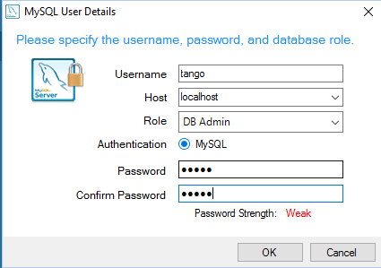
- Setup environment variables providing credentials to access MySQL:
Open Command Line.
Invoke command: %TANGO_ROOT%bindbconfig.exe.
Note
This lets you setup two environment variables
MYSQL_USERandMYSQL_PASSWORDused to access the MySQL server. You may userootcredentials provided upon MySQL installation if it is your development workstation. For production environment it is suggested to create an additional user withDB Adminprivileges. On Windows you may use MySQL Installer from Start menu and select the option Reconfigure for MySQL Server. Please refer to: http://dev.mysql.com/doc/refman/5.7/en/adding-users.html
- Populate database with an initial Tango configuration:
Open a command line.
Add MySQL client to be available in the PATH. For MySQL version 5.7 the command should be: set PATH=%PATH%;"C:Program FilesMySQLMySQL Server 5.7bin"
Note
Adjust the path according to your MySQL version and the path where it is installed.
Invoke cd "%TANGO_ROOT%sharetangodb".
Call create_db.bat.
- Start a DataBaseds Device Server:
Open a new command line window.
In the command line call "%TANGO_ROOT%binstart-db.bat".
Note
To make your Tango installation operational you have to have this DataBaseds running permanently. You may either add the command above to Autostart or run it as a service.
- Make DataBaseds run as a service
Note
The proposed solution uses NSSM tool which works on all versions of Windows but you may find some other tools available including native srvany.exe.
Download NSSM from http://nssm.cc/.
Unpack the file to some convinient location. It is suggested to copy proper (32bit or 64bit) version to the Tango bin folder
%TANGO_ROOT%\bin\.Open Command Line as Administrator.
Change current path to where the nssm is unpacked or copied, eg. cd "%TANGO_ROOT%bin".
- Invoke nssm.exe install Tango-DataBaseds. This will open a window where you can define service parameters.
- In the Application tab provide information as follows (adjust if your installation path is different).
- 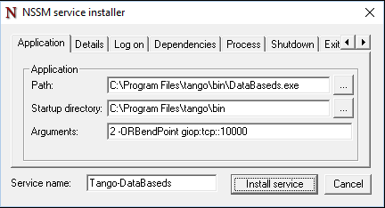
- In the Environment tab provide variables with credentials used for accessing the MySQL, like:
- 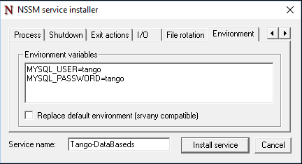
Click Install Service.
Invoke nssm.exe start Tango-DataBaseds to start the service.
Test if everything is ok. Use Start menu to run Jive or in command line call "%TANGO_ROOT%binstart-jive.bat".
Running Device Servers¶
The recommended way of running device servers is to use Starter service. Then you may use NSSM as for DataBaseds. Assuming you have downloaded it and copied to the Tango bin folder please follow:
Open Command Line as Administrator (if it is not yet open).
Prepare folder for Device Servers executable:
Note
To let your device servers start with Starter service their executables have to be in a path without spaces. This is a limitation of the current Starter implementation.
- Create a directory for Device Servers. Let it be
C:\DeviceServers\binwith mkdir c:DeviceServersbin - Change to the Tango bin directory with command (cd "%TANGO_ROOT%bin")
- Copy TangoTest Device Server to the newly crated folder: copy TangoTest.exe c:DeviceServersbin
- Create a directory for Device Servers. Let it be
- Add entry about the Starter device server you will start on your computer:
Start a tool called Astor. You may use either Windows Start menu or call tango-astor.bat
In Astor window select menu
- In the form that appears provide your Host name and Device Servers PATH.
- 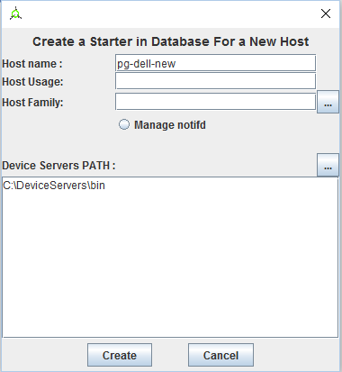
Accept with Create
Go back to Command Line
- Install Starter service:
Invoke nssm.exe install Tango-DataBaseds.
In the Application tab provide information as follows:
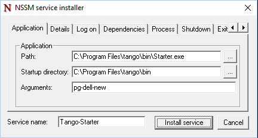
Adjust if your installation path is different. In Arguments exchange
pg-dell-newwith the proper name of your host.In the Environment tab provide TANGO_HOST variable, like:
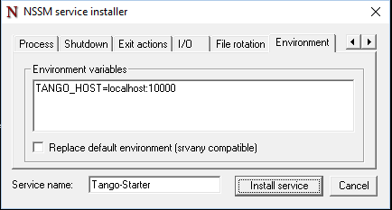Click :guilabel:.
Start the service: nssm.exe start Tango-Starter.
Go back to Astor.
After a while you will see a green led next to your host name:

Run TangoTest device server:
You may test the configuration by starting prefigured TangoTest device.
Start Astor if it is not running.
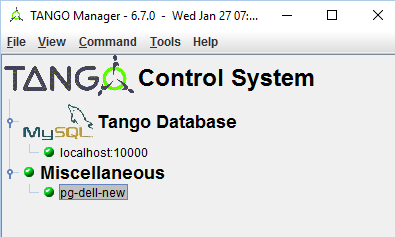Double Click on your computer name to open Control Panel. It opens a window as below:
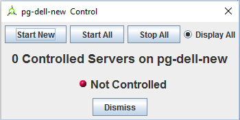Click Start new.
In the open window select :
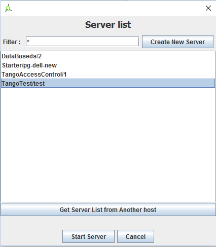Click Start Server.
In the open window select Controlled by Astro -> Yes, and Startup Level -> Level 1.
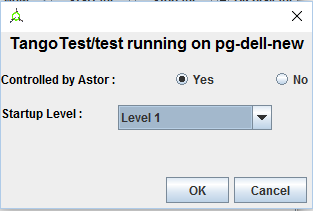When you click OK it should start the server. After a while you should see:
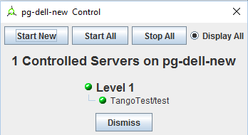
- Running your Device Servers:
- You need to copy an executable to the folder configured for Starter. In our example it is
C:DeviceServersbin. - Then use Astor. After opening Control panel for your computer (double clicking on a label) and selection Start New…
- Select Create New Server and follow a wizard.
- You need to copy an executable to the folder configured for Starter. In our example it is
What’s next¶
You should check PyTango and Taurus library and tools to cope with scripting and GUIs for Tango PyTango and Taurus on Windows.